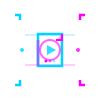
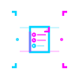
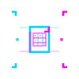
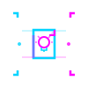

cdk8s-monitoring documentation#
A generic cdk8s construct library for a Kubernetes monitoring stack.
@bluedynamics/cdk8s-monitoring synthesizes a complete observability stack with cdk8s: Prometheus, Thanos, Loki, Grafana, and Alloy, with Thanos long-term storage on S3-compatible object storage.
About cdk8s-monitoring#
The library is application-agnostic. It ships only the stack, with sensible production defaults you override where needed. Your own dashboards and alert rules live in your integration chart and attach beside the stack, so the same stack code is shared across clusters with no copy-paste.
Key features:
Prometheus, Alertmanager, and Grafana through the kube-prometheus-stack Helm chart.
Thanos Query, Store, and Compactor for long-term metrics with downsampling.
Loki and Alloy for log aggregation and collection.
S3 buckets and credentials wired through Crossplane and External Secrets Operator.
ArgoCD sync-wave ordering baked into the orchestrator.
A typed configuration split into required cluster values and overridable package defaults.
Documentation structure#
This documentation follows the Diátaxis framework, organized by what you need.

Learning-oriented: step-by-step lessons to build skills.
Start here if you are new to cdk8s-monitoring.

Goal-oriented: solutions to specific problems.
Use these when you need to accomplish something.

Information-oriented: technical specifications and configuration.
Consult when you need detailed facts.

Understanding-oriented: concepts and design decisions.
Read to deepen your understanding.
Quick links#
Getting started#
Quick start — synthesize and deploy a minimal stack.
Set up prerequisites — prepare cluster infrastructure.
Architecture — see how the components fit together.
Configuration#
Provide cluster configuration — build your integration chart with
mergeConfig.Configuration options — complete configuration reference.
Common tasks#
Add application dashboards and alerts — attach your own dashboards and alerts.
Override the defaults — change resources, retention, and replicas.
Table of contents#
Documentation